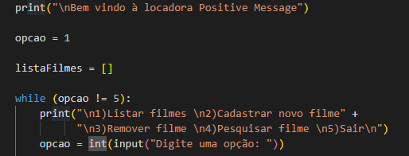

Introdução da locadora
Explicação sobre locadora:
Agora você vai aprender como estruturamos nossa locadora:

Começamos definindo uma variável opção valor 1, ela será necessária para o funcionamento While.
Criamos também uma lista chamada listaFilme é nela que nossos filmes serão armazenados.
Aqui está o While, enquanto a variável opção for diferente de 5, nosso programa continuará executando, contudo, se digitado o número 5, saímos do programa.
Printamos nosso menu (\n serve para pular a linha).
Variável opção recebe um input(entrada), o usuário precisa informar algum valor numérico.